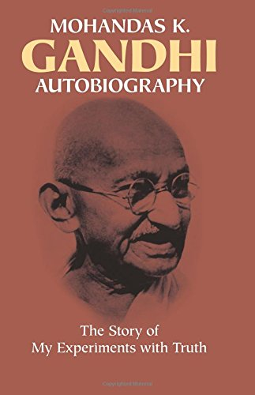
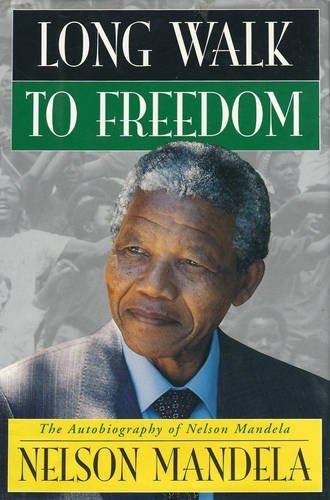

The Story of My Experiment with Truth

Author : Mahatma Gandhi
Gandhi's autobiography, which he had titled 'My experiments with Truth' can be rated as one of the most
popular and the most influential books in the recent history. It was written at the instance of Swami Anand.
It appeared in the Weekly 'Navjivan' during 1925-28
Long Walk To Freedom

Author : Nelson Mandela
Long Walk to Freedom is an autobiography written by South African President Nelson Mandela, and first
published in 1994 by Little Brown & Co. ... The last chapters of the book describe his political ascension
and his belief that the struggle still continued against apartheid in South Africa.
Wings of Fire
 Author : A.P.J.Abdul kalam
Author : A.P.J.Abdul kalam
Wings of Fire: An Autobiography of APJ Abdul Kalam (1999), former President of India. It was written by Dr.
Abdul Kalam and Arun Tiwari. Dr. Kalam examines his early life, effort, hardship, fortitude, luck, and the
chance that eventually led him to lead Indian space research, nuclear and missile programs
The Alchemist
 Author : Paulo Coelho
Author : Paulo Coelho
The Alchemist is the magical story of Santiago, an Andalusian shepherd boy who yearns to travel in search
of a worldly treasure as extravagant as any ever found. From his home in Spain he journeys to the markets of
Tangiers and across the Egyptian desert to a fateful encounter with the alchemist.